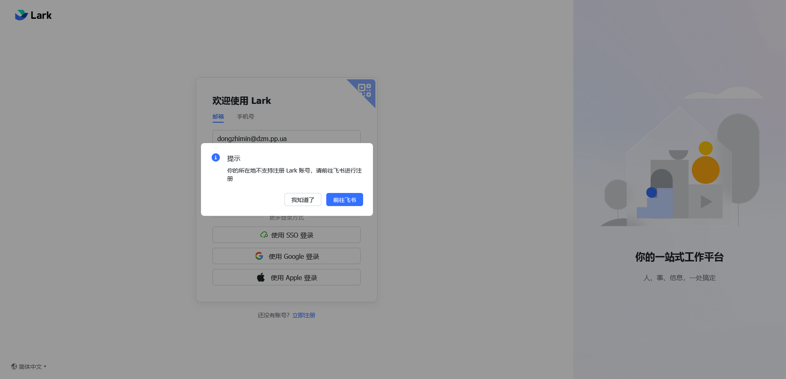

刚才我写过一篇文章，关于站点的情况说明，挂人并不是为了泄愤，也不是最终目的，而是本篇重要博客的基础，以及将来我写保姆级教程的典型案例。
前言
天塌了！天塌了！就在刚才，我们的毛象圈子似乎又出事了。什么都别废话，看图
结合王畅睿天天不上学，开小号到处蹦跶的嚣张嘴脸，不得不追杀。（当然，这个图里的杰作，也不清楚是不是他干的，但他似乎已经认领了这起恐怖袭击）
之前收到乌克兰域名注册局的通知，我就知道要寄了。但我绝对不可能让王某称心如意，就此退网。我的路又两条，最亏的一条：买一个新的域名，抽空从头重新建个实例，我这好不容易攒的100多个粉丝全部放弃。更可恶的是，要把我这一年的上万条嘟文都给放弃，这些除了有让敌人害怕的内容，还要很多一旦失去就要找很久的，甚至绝版的技术踩坑指南！
屈服于强权而放弃粉丝和自己的所有嘟文，这TM不就跟推特一样了吗！
还有一条路，就是把粉丝迁移到其他站点，本站修改LOCAL_DOMAIN环境变量以后，再迁移回本站。这可以最大程度地挽回损失。
实验
迁移账号，必定会造成损失，一个是30天的冷却期，如果失败，将无法重试迁移；另一个是必定有部分粉丝带不走，ta们是bot，或者实例（暂时）跑路了。
我开启我的闲置VPS，之前也是运行长毛象实例的，让它重新运行了长毛象实例。
我在接到通知后，第一时间就买了几个域名。在群里找笨蛋冰咨询了哪里有防投诉域名和防投诉服务器卖。拿了一些看着不太宝贵的域名，完成解析，全新配置了实例。
实验内容
拿旧站当逃生舱，新站模拟域名停止解析状况。迁移的粉丝，就用我那几十个小号。
实验结果
可以迁移。首先，迁出时不能修改LOCAL_DOMAIN，但要添加ALTERNATE_DOMAINS，这样用户才能登录。然后新账号要把旧帐号设置为别名。更改LOCAL_DOMAIN后，实例将无法收到一切站外嘟文。除非，取关并重新关注，中继站也都禁用并重新启用。
实验原理（推测）
旧帐号所在实例，按照旧帐号的粉丝列表，给所有粉丝发送取关自己，关注新账号的请求。这其中，旧帐号用webfinger去点粉丝，而粉丝却不必用webfinger点旧帐号来验证（旧帐号由于失去旧域名的解析，无法被webfinger触及。而且这个bug肯定不可能修，不然我可以反过来强制禁止人家外站用户对我拉黑取关了）。
旧实例修改LOCAL_DOMAIN后，以前的关注和中继依旧是要照常给它发送消息，但是找不到主机。只有重新关注和重新加入中继后，旧实例把新的webfinger地址告诉联合内的其他实例，它们把旧实例当成了一个有25年工作经验的应届生罢了。这很正常，这BUG也不可能修掉，不然你说为什么长毛象没从第一版公测到v4.4，也没把域名写死到数据库里去？
新账号迁回改名后的旧实例也非常顺利。
实际操作
我备份服务器后，将主账号粉丝全部迁移，共迁移成功80多粉丝。1天后改名操作，重新加入中继，取关一切并重新导入。现在账号跟没事人一样。
但是，有些小问题，我的测试账号，无法将粉丝迁移到外站，主要卡在设置别名时，所有外站账号提示找不到此账号。这说明账号没有联合，基本上不必怀疑象友把我小号封了。
对账号安全的反思和复盘
平时要做好数据库和证书的备份。
数据库的备份
这次王畅睿也举报了我的VPS，侥幸没被删。失去了便宜的VPS事小，我账号上的数据事大。所以得参考这个教程 https://www.eallion.com/mastodon-backup/ ，每天全自动把数据库备份到存储桶。详细操作，我是简化了很多倍的，用更笨的办法来备份。而且我也觉得这象友的脚本可以加些个&和wait;，显得更优雅。
证书的备份
每两个月，实例都必须刷新证书，因为3个月就过期了。每次执行刷新的crontab时，还应该顺带把证书备份到存储桶去。这是为了在备用实例无法添加别名时，可以拿还有余温的旧证书来联合旧实例。
就在刚才，我还发现了一招，还没试过的办法，利用ALLOWED_PRIVATE_ADDRESSES和这段代码来进行http连接。把旧实例的IP地址加入到这段代码里，或许能实现很多神奇的功能。
我觉得rclone比aws-cli更好用，因为b2存储桶用aws-cli得加额外配置，否则会报错。
关于注册网站第三方服务用的邮箱
我发现还是需要用公共邮箱，就比如gmail.com和protonmail比较好，而不是用自己域名的邮箱。用自己域名的邮箱，虽然没人知道我身份，但很多服务改不了邮箱，甚至登录不进去。

用gmail这种公共邮箱，隐私性差了一点，还是可能会被俄苏狗开盒，如果你拿干这个用的邮箱，同时来注册腾讯相关账号和b站的话，都是实名的，还经常脱库。
我认为最好的办法，还是多注册几个域名，部分域名负责岁静，专门用来给自己转发密码管理器和注册服务用。
对于如何选购服务器，再搞个域名，我有空再写个保姆级教程。很快就来了
——————更新————————
原来开头那个页面是笨蛋冰自己弄的，节目效果拉满了属于是